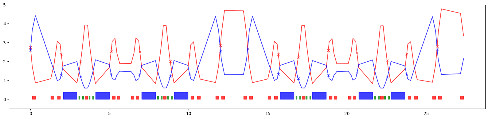
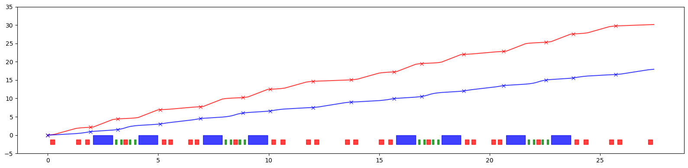
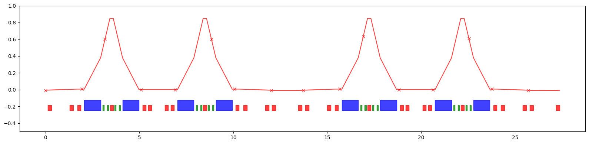
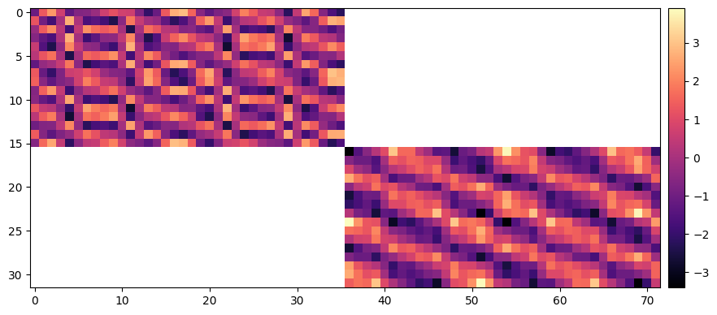

Example-55: Demo
[1]:
# In this DEMO basic functionality used for linear lattice analysis is demonstrated
[2]:
# Set data type and device
import torch
dtype = torch.float64
device = torch.device('cuda') if torch.cuda.is_available() else torch.device('cpu')
[3]:
# Use selected data type and device for all elements
from model.library.element import Element
Element.dtype = dtype
Element.device = device
[4]:
# Load ELEGANT SDDS twiss or other table
from pathlib import Path
from model.command.external import load_sdds
path = Path('ic.twiss')
# parameters -- {parameter: value}
# columns -- {element: {parameter: value}}
parameters, columns = load_sdds(path)
[5]:
# Set tunes, twiss parameters, phase advances and dispersion at BPMs
from model.command.util import select
NUX = torch.tensor(parameters['nux'] % 1, dtype=torch.float64)
NUY = torch.tensor(parameters['nuy'] % 1, dtype=torch.float64)
kinds = select(columns, 'ElementType')
S = torch.tensor([value for value, kind in zip(select(columns, 's').values(), kinds.values()) if kind == 'MONI'], dtype=dtype, device=device)
AX = torch.tensor([value for value, kind in zip(select(columns, 'alphax').values(), kinds.values()) if kind == 'MONI'], dtype=dtype, device=device)
BX = torch.tensor([value for value, kind in zip(select(columns, 'betax' ).values(), kinds.values()) if kind == 'MONI'], dtype=dtype, device=device)
AY = torch.tensor([value for value, kind in zip(select(columns, 'alphay').values(), kinds.values()) if kind == 'MONI'], dtype=dtype, device=device)
BY = torch.tensor([value for value, kind in zip(select(columns, 'betay' ).values(), kinds.values()) if kind == 'MONI'], dtype=dtype, device=device)
MUX = torch.tensor([value for value, kind in zip(select(columns, 'psix').values(), kinds.values()) if kind == 'MONI'], dtype=dtype, device=device)
MUY = torch.tensor([value for value, kind in zip(select(columns, 'psiy').values(), kinds.values()) if kind == 'MONI'], dtype=dtype, device=device)
DQX = torch.tensor([value for value, kind in zip(select(columns, 'etax' ).values(), kinds.values()) if kind == 'MONI'], dtype=dtype, device=device)
DPX = torch.tensor([value for value, kind in zip(select(columns, 'etaxp').values(), kinds.values()) if kind == 'MONI'], dtype=dtype, device=device)
DQY = torch.tensor([value for value, kind in zip(select(columns, 'etay' ).values(), kinds.values()) if kind == 'MONI'], dtype=dtype, device=device)
DPY = torch.tensor([value for value, kind in zip(select(columns, 'etayp').values(), kinds.values()) if kind == 'MONI'], dtype=dtype, device=device)
[6]:
# Load and build ELEGANT lattice
from model.command.external import load_lattice
path = Path('ic.lte')
data = load_lattice(path)
from model.library.line import Line
from model.command.build import build
ring:Line = build('RING', 'ELEGANT', data)
# Flatten lattice
ring.flatten()
# Merge adjacent drifts (all drifts are renamed)
ring.merge()
# Set linear flag in dipoles (dipoles are nonlinear by default)
for element in ring:
if element.kind == 'Dipole':
element.linear = True
# Set number of elements of different kinds
nb = ring.describe['BPM']
nd = ring.describe['Dipole']
nq = ring.describe['Quadrupole']
ns = ring.describe['Sextupole']
# Describe
print(ring.describe)
{'BPM': 16, 'Drift': 68, 'Quadrupole': 28, 'Dipole': 8, 'Sextupole': 16}
[7]:
# Plot 2D layout
from model.command.layout import Layout
line = ring.clone()
line.ns = 0.01
layout = Layout(line)
# Generate reference orbit
x, y, _ = layout.orbit(flat=False, step=0.01, start=(0, 0))
# Generate layout
blocks, _ = layout.profile_2d(start=(0, 0), delta=1.0, linewidth=1.0, exclude=['Drift'])
_, labels = layout.profile_2d(start=(0, 0), delta=1.0, linewidth=1.0, exclude=['Dipole', 'Quadrupole', 'Sextupole', 'Drift'], fontsize=8)
# Plot
from matplotlib import pyplot as plt
plt.figure()
plt.plot(x, y, color='black')
for block in blocks:
plt.errorbar(**block)
for label in labels:
plt.text(**label)
plt.xlabel(r'x (m)')
plt.ylabel(r'y (m)')
plt.tight_layout()
plt.show()

[8]:
# Tracking (single initial)
x = torch.tensor([0.001, 0.0, 0.0, 0.0], dtype=dtype, device=device)
print(ring(x))
tensor([-0.0045, 0.0091, 0.0000, 0.0000], dtype=torch.float64)
[9]:
# Tracking (vectorized map over initial values)
xs = torch.tensor(2**10*[4*[0.0]], dtype=dtype, device=device)
print(torch.vmap(ring)(xs).shape)
torch.Size([1024, 4])
[10]:
# Tracking (pass deviation parameters)
data = ring.data()
data['Q3D3']['kn'] = 0.25
print(ring(x, data=data))
tensor([-0.0044, 0.0089, 0.0000, 0.0000], dtype=torch.float64)
[11]:
# Tracking (wrapper)
from model.command.wrapper import group
kn = torch.tensor([0.25], dtype=dtype, device=device)
mapping, *_ = group(ring, 0, len(ring) - 1, ('kn', None, ['Q3D3'], None))
print(mapping(x, kn))
tensor([-0.0044, 0.0089, 0.0000, 0.0000], dtype=torch.float64)
[12]:
# Differentiability with respect to initial state
print(torch.func.jacrev(mapping, 0)(x, kn))
print(torch.func.jacrev(mapping, 1)(x, kn))
tensor([[-4.4739, -2.6532, 0.0000, 0.0000],
[ 8.9295, 5.0721, 0.0000, 0.0000],
[ 0.0000, 0.0000, 3.8653, -2.1508],
[ 0.0000, 0.0000, 5.5530, -2.8312]], dtype=torch.float64)
tensor([[ 0.0004],
[-0.0007],
[ 0.0000],
[ 0.0000]], dtype=torch.float64)
[13]:
# Differentiability with respect to deviation parameters
print(torch.func.jacrev(mapping, 1)(x, kn))
tensor([[ 0.0004],
[-0.0007],
[ 0.0000],
[ 0.0000]], dtype=torch.float64)
[14]:
# Tunes
from model.command.tune import tune
nux, nuy = tune(ring, [], matched=True)
print(torch.allclose(NUX, nux, rtol=1.0E-12, atol=1.0E-12))
print(torch.allclose(NUY, nuy, rtol=1.0E-12, atol=1.0E-12))
True
True
[15]:
# Parametric tunes
def fn(dp, kn, ks):
return tune(ring, [dp, kn, ks], ('dp', None, None, None), ('kn', ['Quadrupole'], None, None), ('ks', ['Quadrupole'], None, None), matched=True)
# Vectorizing map
dp = torch.tensor([0.0], dtype=dtype, device=device)
kn = torch.zeros(nq, dtype=dtype, device=device)
ks = torch.zeros(nq, dtype=dtype, device=device)
print(torch.vmap(fn, in_dims=(None, 0, None))(dp, torch.stack(2**10*[kn]), ks).shape)
# Derivatives
print(torch.func.jacrev(fn, 0)(dp, kn, ks))
print(torch.func.jacrev(fn, 1)(dp, kn, ks))
torch.Size([1024, 2])
tensor([[0.0284],
[0.7658]], dtype=torch.float64)
tensor([[ 0.0187, 0.0217, 0.0461, 0.0601, 0.0484, 0.0297, 0.0299, 0.0488,
0.0597, 0.0457, 0.0214, 0.0192, 0.0669, 0.0667, 0.0191, 0.0216,
0.0461, 0.0597, 0.0483, 0.0296, 0.0297, 0.0485, 0.0595, 0.0459,
0.0209, 0.0196, 0.0683, 0.0647],
[-0.0668, -0.0283, -0.0136, -0.0078, -0.0141, -0.0205, -0.0202, -0.0137,
-0.0079, -0.0137, -0.0282, -0.0661, -0.0250, -0.0251, -0.0663, -0.0282,
-0.0137, -0.0079, -0.0138, -0.0203, -0.0205, -0.0140, -0.0078, -0.0137,
-0.0288, -0.0659, -0.0250, -0.0258]], dtype=torch.float64)
[16]:
# Twiss parameters
from model.command.twiss import twiss
ax, bx, ay, by = twiss(ring, [], alignment=False, matched=True, advance=True, full=False).T
[17]:
# Compare Twiss parameters at BPMs
ax_bpm, bx_bpm, ay_bpm, by_bpm = torch.stack([torch.stack([*cs]) for (_, kind, *_), *cs in zip(ring.layout(), ax, bx, ay, by) if kind == 'BPM']).T
print(torch.allclose(AX, ax_bpm, rtol=1.0E-12, atol=1.0E-12))
print(torch.allclose(BX, bx_bpm, rtol=1.0E-12, atol=1.0E-12))
print(torch.allclose(AY, ay_bpm, rtol=1.0E-12, atol=1.0E-12))
print(torch.allclose(BY, by_bpm, rtol=1.0E-12, atol=1.0E-12))
True
True
True
True
[18]:
# Plot beta functions
from matplotlib.patches import Rectangle
layout = Layout(ring)
_, _, lengths, *_ = layout.slicing_table()
rectangles = layout.profile_1d(scale=0.75, shift=0.0, text=False, exclude=['BPM', 'Drift'])
plt.figure(figsize=(16, 4))
plt.errorbar(S.cpu().numpy(), BX.cpu().numpy(), fmt=' ', color='red', alpha=0.75, marker='x')
plt.errorbar(ring.locations().cpu().numpy(), bx.cpu().numpy(), fmt='-', color='red', alpha=0.75)
plt.errorbar(S.cpu().numpy(), BY.cpu().numpy(), fmt=' ', color='blue', alpha=0.75, marker='x')
plt.errorbar(ring.locations().cpu().numpy(), by.cpu().numpy(), fmt='-', color='blue', alpha=0.75)
for rectangle in rectangles:
plt.gca().add_patch(Rectangle(**rectangle))
plt.ylim(-0.5, 5.0)
plt.tight_layout()
plt.show()

[19]:
# Parametric twiss (lattice start location)
def fn(dp, kn, ks):
return twiss(ring, [dp, kn, ks], ('dp', None, None, None), ('kn', ['Quadrupole'], None, None), ('ks', ['Quadrupole'], None, None), advance=False, matched=True)
# Vectorizing map
dp = torch.tensor([0.0], dtype=dtype, device=device)
kn = torch.zeros(nq, dtype=dtype, device=device)
ks = torch.zeros(nq, dtype=dtype, device=device)
print(torch.vmap(fn, in_dims=(None, 0, None))(dp, torch.stack(2**10*[kn]), ks).shape)
# Derivatives
print(torch.func.jacrev(fn, 0)(dp, kn, ks))
print(torch.func.jacrev(fn, 1)(dp, kn, ks))
torch.Size([1024, 4])
tensor([[-222.0538],
[-110.7909],
[ 27.9708],
[ -13.9537]], dtype=torch.float64)
tensor([[-0.0893, 0.4014, 1.2554, -0.9068, -1.5491, -0.9866, -0.6147, -0.7071,
-1.9186, 0.2045, -0.1659, 0.4221, 1.9239, 2.2147, 0.5854, -0.4487,
-0.4684, -1.9595, -0.0112, -0.2204, -0.9209, -1.5967, -0.0541, 1.5081,
0.5988, -0.3222, -0.4638, 0.8415],
[ 0.0182, 0.1496, 0.5733, -0.6730, -0.7756, -0.5178, -0.4104, -0.5325,
-0.9651, 0.2699, -0.0145, 0.1734, 0.9035, 1.1954, 0.3374, -0.2984,
-0.4055, -1.0062, 0.1660, -0.0147, -0.4518, -0.8235, 0.1829, 0.8281,
0.3562, -0.2319, -0.4848, 0.2358],
[ 1.6183, -0.0219, -0.2993, -0.0049, 0.3526, 0.2005, -0.5750, -0.4693,
0.1832, 0.0065, -0.5948, -2.2667, -0.8472, 0.8119, 2.2819, 0.7206,
0.0759, -0.2127, 0.4684, 0.6358, -0.0792, -0.2893, -0.0394, 0.3584,
0.2001, -1.2685, -0.6598, 0.2486],
[-0.7202, 0.1496, 0.2258, -0.0342, -0.1608, -0.0228, 0.3921, 0.2789,
-0.1348, 0.0622, 0.4565, 1.3632, 0.4758, -0.5180, -1.3618, -0.3315,
0.0206, 0.1024, -0.2828, -0.3332, 0.1447, 0.2237, -0.0135, -0.1681,
0.0184, 1.0088, 0.4647, -0.2653]], dtype=torch.float64)
[20]:
# Phase advance
from model.command.advance import advance
mux, muy = advance(ring, [], alignment=False, matched=True).T
[21]:
# Total tunes
print(torch.allclose(mux.sum()/(2*torch.pi), torch.tensor(parameters['nux'], dtype=torch.float64), rtol=1.0E-12, atol=1.0E-12))
print(torch.allclose(muy.sum()/(2*torch.pi), torch.tensor(parameters['nuy'], dtype=torch.float64), rtol=1.0E-12, atol=1.0E-12))
True
True
[22]:
# Plot accumulated phase advance
mux_sum = torch.cat([torch.tensor([0.0], dtype=torch.float64), mux.cumsum(-1)])
muy_sum = torch.cat([torch.tensor([0.0], dtype=torch.float64), muy.cumsum(-1)])
layout = Layout(ring)
_, _, lengths, *_ = layout.slicing_table()
rectangles = layout.profile_1d(scale=5.0, shift=-2.5, text=False, exclude=['BPM', 'Drift'])
plt.figure(figsize=(16, 4))
plt.errorbar(S.cpu().numpy(), MUX.cpu().numpy(), fmt=' ', color='red', alpha=0.75, marker='x')
plt.errorbar(torch.cat([ring.locations(), ring.length.unsqueeze(-1)]).cpu().numpy(), mux_sum.cpu().numpy(), fmt='-', color='red', alpha=0.75)
plt.errorbar(S.cpu().numpy(), MUY.cpu().numpy(), fmt=' ', color='blue', alpha=0.75, marker='x')
plt.errorbar(torch.cat([ring.locations(), ring.length.unsqueeze(-1)]).cpu().numpy(), muy_sum.cpu().numpy(), fmt='-', color='blue', alpha=0.75)
for rectangle in rectangles:
plt.gca().add_patch(Rectangle(**rectangle))
plt.ylim(-5.0, 35.0)
plt.tight_layout()
plt.show()

[23]:
# Parametric advance
def fn(dp, kn, ks):
return advance(ring, [dp, kn, ks], ('dp', None, None, None), ('kn', ['Quadrupole'], None, None), ('ks', ['Quadrupole'], None, None), matched=True)
# Vectorizing map
dp = torch.tensor([0.0], dtype=dtype, device=device)
kn = torch.zeros(nq, dtype=dtype, device=device)
ks = torch.zeros(nq, dtype=dtype, device=device)
print(torch.vmap(fn, in_dims=(None, 0, None))(dp, torch.stack(2**10*[kn]), ks).shape)
# Derivatives
print(torch.func.jacrev(fn, 0)(dp, kn, ks).shape)
print(torch.func.jacrev(fn, 1)(dp, kn, ks).shape)
torch.Size([1024, 136, 2])
torch.Size([136, 2, 1])
torch.Size([136, 2, 28])
[24]:
# Dispersion
from model.command.orbit import dispersion
guess = torch.tensor(4*[0.0], dtype=dtype, device=device)
dqx, dpx, dqy, dpy = dispersion(ring, guess, [], advance=True, full=False)
[25]:
# Compare dispersion at BPMs
dqx_bpm, dpx_bpm, dqy_bpm, dpy_bpm = torch.stack([torch.stack([*cs]) for (_, kind, *_), *cs in zip(ring.layout(), dqx, dpx, dqy, dpy) if kind == 'BPM']).T
print(torch.allclose(DQX, dqx_bpm, rtol=1.0E-12, atol=1.0E-12))
print(torch.allclose(DPX, dpx_bpm, rtol=1.0E-12, atol=1.0E-12))
print(torch.allclose(DQY, dqy_bpm, rtol=1.0E-12, atol=1.0E-12))
print(torch.allclose(DPY, dpy_bpm, rtol=1.0E-12, atol=1.0E-12))
True
True
True
True
[26]:
# Plot dispersion
layout = Layout(ring)
_, _, lengths, *_ = layout.slicing_table()
rectangles = layout.profile_1d(scale=0.25, shift=-0.25, text=False, exclude=['BPM', 'Drift'])
plt.figure(figsize=(16, 4))
plt.errorbar(S.cpu().numpy(), DQX.cpu().numpy(), fmt=' ', color='red', alpha=0.75, marker='x')
plt.errorbar(ring.locations().cpu().numpy(), dqx.cpu().numpy(), fmt='-', color='red', alpha=0.75)
for rectangle in rectangles:
plt.gca().add_patch(Rectangle(**rectangle))
plt.ylim(-0.5, 1.0)
plt.tight_layout()
plt.show()

[27]:
# Parametric dispersion
def fn(kn, ks):
return dispersion(ring, guess, [kn, ks], ('kn', ['Quadrupole'], None, None), ('ks', ['Quadrupole'], None, None), advance=False)
# Vectorizing map
kn = torch.zeros(nq, dtype=dtype, device=device)
ks = torch.zeros(nq, dtype=dtype, device=device)
print(torch.vmap(fn, in_dims=(0, None))(torch.stack(2**10*[kn]), ks).shape)
# Derivatives
print(torch.func.jacrev(fn, 0)(kn, ks))
print(torch.func.jacrev(fn, 1)(kn, ks))
torch.Size([1024, 4])
tensor([[-1.1162e-03, -8.2786e-04, -2.4801e-03, 1.9629e-01, 2.7563e-05,
9.5180e-06, -2.3718e-05, -4.7673e-05, -1.0284e-01, 2.2051e-03,
6.9025e-04, 1.3755e-03, 5.3769e-03, 5.7391e-03, 1.5789e-03,
3.3797e-04, 1.3670e-03, 8.2397e-02, -6.1463e-05, -3.5245e-05,
-1.4306e-05, -1.4063e-05, 3.4270e-01, -2.6831e-03, -9.3952e-04,
-6.7697e-04, -3.2418e-03, -4.2953e-03],
[ 1.6338e-03, 1.6955e-03, 4.8680e-03, -5.0176e-01, -9.1579e-06,
8.7653e-06, 6.6251e-05, 1.2097e-04, 2.7302e-02, -3.4149e-03,
-9.8856e-04, -2.7727e-03, -1.0457e-02, -1.0501e-02, -2.7973e-03,
-9.4603e-04, -3.3137e-03, 1.1249e-02, 9.2654e-05, 5.0532e-05,
8.0420e-06, -3.5286e-06, -5.1448e-01, 4.8677e-03, 1.6412e-03,
1.7617e-03, 7.6393e-03, 9.0321e-03],
[ 0.0000e+00, 0.0000e+00, 0.0000e+00, 0.0000e+00, 0.0000e+00,
0.0000e+00, 0.0000e+00, 0.0000e+00, 0.0000e+00, 0.0000e+00,
0.0000e+00, 0.0000e+00, 0.0000e+00, 0.0000e+00, 0.0000e+00,
0.0000e+00, 0.0000e+00, 0.0000e+00, 0.0000e+00, 0.0000e+00,
0.0000e+00, 0.0000e+00, 0.0000e+00, 0.0000e+00, 0.0000e+00,
0.0000e+00, 0.0000e+00, 0.0000e+00],
[ 0.0000e+00, 0.0000e+00, 0.0000e+00, 0.0000e+00, 0.0000e+00,
0.0000e+00, 0.0000e+00, 0.0000e+00, 0.0000e+00, 0.0000e+00,
0.0000e+00, 0.0000e+00, 0.0000e+00, 0.0000e+00, 0.0000e+00,
0.0000e+00, 0.0000e+00, 0.0000e+00, 0.0000e+00, 0.0000e+00,
0.0000e+00, 0.0000e+00, 0.0000e+00, 0.0000e+00, 0.0000e+00,
0.0000e+00, 0.0000e+00, 0.0000e+00]], dtype=torch.float64)
tensor([[ 0.0000e+00, 0.0000e+00, 0.0000e+00, 0.0000e+00, 0.0000e+00,
0.0000e+00, 0.0000e+00, 0.0000e+00, 0.0000e+00, 0.0000e+00,
0.0000e+00, 0.0000e+00, 0.0000e+00, 0.0000e+00, 0.0000e+00,
0.0000e+00, 0.0000e+00, 0.0000e+00, 0.0000e+00, 0.0000e+00,
0.0000e+00, 0.0000e+00, 0.0000e+00, 0.0000e+00, 0.0000e+00,
0.0000e+00, 0.0000e+00, 0.0000e+00],
[ 0.0000e+00, 0.0000e+00, 0.0000e+00, 0.0000e+00, 0.0000e+00,
0.0000e+00, 0.0000e+00, 0.0000e+00, 0.0000e+00, 0.0000e+00,
0.0000e+00, 0.0000e+00, 0.0000e+00, 0.0000e+00, 0.0000e+00,
0.0000e+00, 0.0000e+00, 0.0000e+00, 0.0000e+00, 0.0000e+00,
0.0000e+00, 0.0000e+00, 0.0000e+00, 0.0000e+00, 0.0000e+00,
0.0000e+00, 0.0000e+00, 0.0000e+00],
[ 6.0868e-03, -1.9121e-03, -1.6954e-03, 2.1783e-01, 1.3196e-04,
1.1426e-04, 4.9850e-05, 1.7995e-05, -3.0953e-01, -2.5745e-03,
-1.3526e-03, 1.0628e-03, 1.8173e-04, -7.3803e-03, -6.3713e-03,
2.3662e-03, 2.6927e-03, -7.3148e-02, -9.2005e-05, -9.1568e-05,
-6.9841e-05, -5.2553e-05, 1.9908e-01, 3.1329e-03, 2.0529e-03,
-3.7047e-03, -3.4655e-03, 5.5212e-03],
[ 3.3306e-03, -9.0348e-04, -6.1116e-04, 1.6731e-01, 7.2547e-05,
5.7852e-05, 1.3325e-05, -6.7422e-06, -2.0683e-01, -1.2303e-03,
-5.0343e-04, -2.6321e-04, -9.7110e-04, -4.6478e-03, -3.8785e-03,
1.3020e-03, 1.3295e-03, -9.1948e-02, -5.6294e-05, -5.2568e-05,
-3.2302e-05, -1.9640e-05, 1.5820e-01, 1.7351e-03, 1.0243e-03,
-1.4231e-03, -1.0576e-03, 3.9832e-03]], dtype=torch.float64)
[28]:
# Modify lattice for ORM computation
from model.library.corrector import Corrector
# Clone lattice
copy = ring.clone()
# Split BPMs and change lattice start
copy.split((None, ['BPM'], None, None))
copy.roll(1)
# Insert correctors into quadrupoles and dipoles
ncq = 2**2
ncd = 2**4
for name in [name for name, kind, *_ in copy.layout() if kind == 'Quadrupole']:
corrector = Corrector(f'{name}_CXY', factor=1/(ncq - 1))
copy.split((ncq, None, [name], None), paste=[corrector])
for name in [name for name, kind, *_ in copy.layout() if kind == 'Dipole']:
corrector = Corrector(f'{name}_CXY', factor=1/(ncd - 1))
copy.split((ncd, None, [name], None), paste=[corrector])
# Splice lattice
copy.splice()
# Print sequence between first two BPMs
line, *_ = copy
print(line)
BPM(name="BPM05", direction="inverse", dp=0.0)
Drift(name="DR001", length=0.116715, dp=0.0, exact=False, ns=1, order=0)
Quadrupole(name="Q3D3", length=0.0491425, kn=-8.426928737999999, ks=0.0, dp=0.0, exact=False, ns=1, order=0)
Corrector(name="Q3D3_CXY", cx=0.0, cy=0.0, factor=0.3333333333333333, dp=0.0)
Quadrupole(name="Q3D3", length=0.0491425, kn=-8.426928737999999, ks=0.0, dp=0.0, exact=False, ns=1, order=0)
Corrector(name="Q3D3_CXY", cx=0.0, cy=0.0, factor=0.3333333333333333, dp=0.0)
Quadrupole(name="Q3D3", length=0.0491425, kn=-8.426928737999999, ks=0.0, dp=0.0, exact=False, ns=1, order=0)
Corrector(name="Q3D3_CXY", cx=0.0, cy=0.0, factor=0.3333333333333333, dp=0.0)
Quadrupole(name="Q3D3", length=0.0491425, kn=-8.426928737999999, ks=0.0, dp=0.0, exact=False, ns=1, order=0)
Drift(name="DR002", length=0.9684299999999999, dp=0.0, exact=False, ns=1, order=0)
Quadrupole(name="Q3D2", length=0.0491425, kn=-2.695188250999999, ks=0.0, dp=0.0, exact=False, ns=1, order=0)
Corrector(name="Q3D2_CXY", cx=0.0, cy=0.0, factor=0.3333333333333333, dp=0.0)
Quadrupole(name="Q3D2", length=0.0491425, kn=-2.695188250999999, ks=0.0, dp=0.0, exact=False, ns=1, order=0)
Corrector(name="Q3D2_CXY", cx=0.0, cy=0.0, factor=0.3333333333333333, dp=0.0)
Quadrupole(name="Q3D2", length=0.0491425, kn=-2.695188250999999, ks=0.0, dp=0.0, exact=False, ns=1, order=0)
Corrector(name="Q3D2_CXY", cx=0.0, cy=0.0, factor=0.3333333333333333, dp=0.0)
Quadrupole(name="Q3D2", length=0.0491425, kn=-2.695188250999999, ks=0.0, dp=0.0, exact=False, ns=1, order=0)
Drift(name="DR003", length=0.221715, dp=0.0, exact=False, ns=1, order=0)
Quadrupole(name="Q3F2", length=0.045, kn=13.544085930000001, ks=0.0, dp=0.0, exact=False, ns=1, order=0)
Corrector(name="Q3F2_CXY", cx=0.0, cy=0.0, factor=0.3333333333333333, dp=0.0)
Quadrupole(name="Q3F2", length=0.045, kn=13.544085930000001, ks=0.0, dp=0.0, exact=False, ns=1, order=0)
Corrector(name="Q3F2_CXY", cx=0.0, cy=0.0, factor=0.3333333333333333, dp=0.0)
Quadrupole(name="Q3F2", length=0.045, kn=13.544085930000001, ks=0.0, dp=0.0, exact=False, ns=1, order=0)
Corrector(name="Q3F2_CXY", cx=0.0, cy=0.0, factor=0.3333333333333333, dp=0.0)
Quadrupole(name="Q3F2", length=0.045, kn=13.544085930000001, ks=0.0, dp=0.0, exact=False, ns=1, order=0)
Drift(name="DR004", length=0.065, dp=0.0, exact=False, ns=1, order=0)
BPM(name="BPM07", direction="forward", dp=0.0)
[29]:
# Compute and plot ORM
from model.command.orbit import ORM
orm = ORM(copy, guess, [])
print(orm.shape)
data = orm.clone()
data[data==0.0] = torch.nan
plt.figure(figsize=(10, 10))
img = plt.imshow(data.cpu().numpy(), cmap='magma', interpolation='nearest')
cax = plt.gcf().add_axes([plt.gca().get_position().x1 + 0.01, plt.gca().get_position().y0, 0.02, plt.gca().get_position().height])
plt.colorbar(img, cax=cax)
plt.show()
torch.Size([32, 72])

[30]:
# Parametric ORM
def fn(dp, kn, ks):
return ORM(copy, guess, [dp, kn, ks], ('dp', None, None, None), ('kn', ['Quadrupole'], None, None), ('ks', ['Quadrupole'], None, None))
dp = torch.tensor([0.0], dtype=dtype, device=device)
kn = torch.zeros(nq, dtype=dtype, device=device)
ks = torch.zeros(nq, dtype=dtype, device=device)
print(torch.func.jacrev(fn, 0)(dp, kn, ks).shape)
print(torch.func.jacrev(fn, 1)(dp, kn, ks).shape)
torch.Size([32, 72, 1])
torch.Size([32, 72, 28])